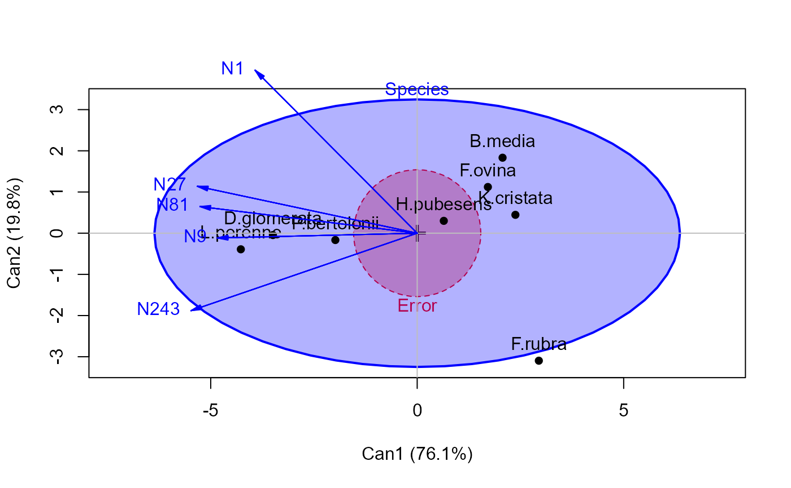
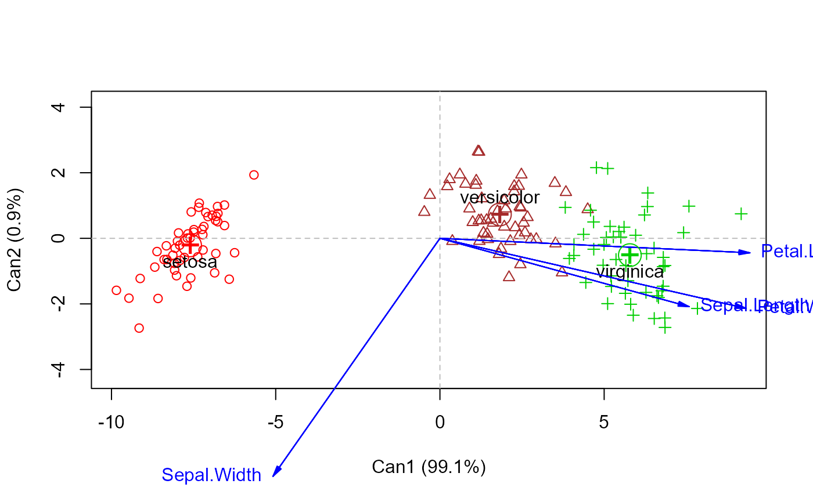
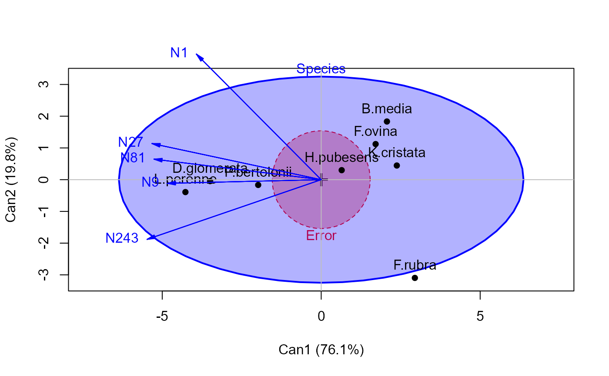
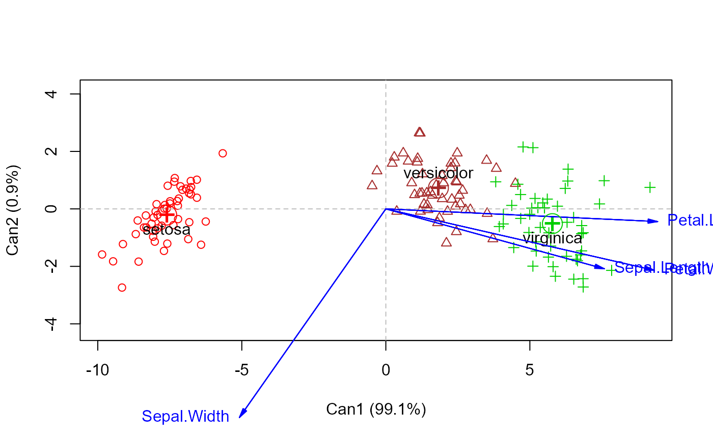

candisc performs a generalized canonical discriminant analysis for
one term in a multivariate linear model (i.e., an mlm object),
computing canonical scores and vectors. It represents a transformation of
the original variables into a canonical space of maximal differences for the
term, controlling for other model terms.
Usage
candisc(mod, ...)
# S3 method for class 'mlm'
candisc(mod, term, type = "2", manova, ndim = rank, ...)
# S3 method for class 'candisc'
print(x, digits = max(getOption("digits") - 2, 3), LRtests = TRUE, ...)
# S3 method for class 'candisc'
summary(
object,
means = TRUE,
scores = FALSE,
coef = c("std"),
ndim,
digits = max(getOption("digits") - 2, 4),
...
)
# S3 method for class 'candisc'
coef(object, type = c("std", "raw", "structure"), ...)
# S3 method for class 'candisc'
scores(x, ...)
# S3 method for class 'candisc'
plot(
x,
which = 1:2,
conf = 0.95,
col,
pch,
scale,
asp = 1,
var.col = "blue",
var.lwd = par("lwd"),
var.labels,
var.cex = 1,
var.pos,
rev.axes = c(FALSE, FALSE),
ellipse = FALSE,
ellipse.prob = 0.68,
fill.alpha = 0.1,
prefix = "Can",
suffix = TRUE,
titles.1d = c("Canonical scores", "Structure"),
points.1d = FALSE,
...
)Arguments
- mod
An mlm object, such as computed by
lm()with a multivariate response- ...
arguments to be passed down. In particular,
type="n"can be used with theplotmethod to suppress the display of canonical scores.- term
the name of one term from
modfor which the canonical analysis is performed.- type
type of test for the model
term, one of: "II", "III", "2", or "3"- manova
the
Anova.mlmobject corresponding tomod. Normally, this is computed internally byAnova(mod)- ndim
Number of dimensions to store in (or retrieve from, for the
summarymethod) themeans,structure,scoresandcoeffs.*components. The default is the rank of the H matrix for the hypothesis term.- digits
significant digits to print.
- LRtests
logical; should likelihood ratio tests for the canonical dimensions be printed?
- object, x
A candisc object
- means
Logical value used to determine if canonical means are printed
- scores
Logical value used to determine if canonical scores are printed
- coef
Type of coefficients printed by the summary method. Any one or more of
"std","raw", or"structure"- which
A vector of one or two integers, selecting the canonical dimension(s) to plot. If the canonical structure for a
termhasndim==1, orlength(which)==1, a 1D representation of canonical scores and structure coefficients is produced by theplotmethod. Otherwise, a 2D plot is produced.- conf
Confidence coefficient for the confidence circles around canonical means plotted in the
plotmethod- col
A vector of the unique colors to be used for the levels of the term in the
plotmethod, one for each level of theterm. In this version, you should assign colors and point symbols explicitly, rather than relying on the somewhat arbitrary defaults, based ongrDevices::palette().- pch
A vector of the unique point symbols to be used for the levels of the term in the
plotmethod- scale
Scale factor for the variable vectors in canonical space. If not specified, a scale factor is calculated to make the variable vectors approximately fill the plot space.
- asp
Aspect ratio for the
plotmethod. Theasp=1(the default) assures that the units on the horizontal and vertical axes are the same, so that lengths and angles of the variable vectors are interpretable.- var.col
Color used to plot variable vectors
- var.lwd
Line width used to plot variable vectors
- var.labels
Optional vector of variable labels to replace variable names in the plots
- var.cex
Character expansion size for variable labels in the plots
- var.pos
Position(s) of variable vector labels wrt. the end point. If not specified, the labels are out-justified left and right with respect to the end points.
- rev.axes
Logical, a vector of
length(which).TRUEcauses the orientation of the canonical scores and structure coefficients to be reversed along a given axis.- ellipse
Draw data ellipses for canonical scores?
- ellipse.prob
Coverage probability for the data ellipses
- fill.alpha
Transparency value for the color used to fill the ellipses. Use
fill.alphato draw the ellipses unfilled.- prefix
Prefix used to label the canonical dimensions plotted
- suffix
Suffix for labels of canonical dimensions. If
suffix=TRUEthe percent of hypothesis (H) variance accounted for by each canonical dimension is added to the axis label.- titles.1d
A character vector of length 2, containing titles for the panels used to plot the canonical scores and structure vectors, for the case in which there is only one canonical dimension.
- points.1d
Logical value for
plot.candiscwhen only one canonical dimension.
Value
An object of class candisc with the following components:
- dfh
hypothesis degrees of freedom for
term- dfe
error degrees of freedom for the
mlm- rank
number of non-zero eigenvalues of \(HE^{-1}\)
- eigenvalues
eigenvalues of \(HE^{-1}\)
- canrsq
squared canonical correlations
- pct
A vector containing the percentages of the
canrsqof their total.- ndim
Number of canonical dimensions stored in the
means,structureandcoeffs.*components- means
A data.frame containing the class means for the levels of the factor(s) in the term
- factors
A data frame containing the levels of the factor(s) in the
term- term
name of the
term- terms
A character vector containing the names of the terms in the
mlmobject- coeffs.raw
A matrix containing the raw canonical coefficients
- coeffs.std
A matrix containing the standardized canonical coefficients
- structure
A matrix containing the canonical structure coefficients on
ndimdimensions, i.e., the correlations between the original variates and the canonical scores. These are sometimes referred to as Total Structure Coefficients.- scores
A data frame containing the predictors in the
mlmmodel and the canonical scores onndimdimensions. These are calculated asY \%*\% coeffs.raw, whereYcontains the standardized response variables.
Details
In typical usage, the term should be a factor or interaction
corresponding to a multivariate test with 2 or more degrees of freedom for
the null hypothesis.
Canonical discriminant analysis is typically carried out in conjunction with
a one-way MANOVA design. It represents a linear transformation of the
response variables into a canonical space in which (a) each successive
canonical variate produces maximal separation among the groups (e.g.,
maximum univariate F statistics), and (b) all canonical variates are
mutually uncorrelated. For a one-way MANOVA with g groups and p responses,
there are dfh = min( g-1, p) such canonical dimensions, and tests,
initially stated by Bartlett (1938) allow one to determine the number of
significant canonical dimensions.
Computational details for the one-way case are described in Cooley & Lohnes (1971), and in the SAS/STAT User's Guide, "The CANDISC procedure: Computational Details," http://support.sas.com/documentation/cdl/en/statug/63962/HTML/default/viewer.htm#statug_candisc_sect012.htm.
A generalized canonical discriminant analysis extends this idea to a general
multivariate linear model. Analysis of each term in the mlm produces
a rank \(df_h\) H matrix sum of squares and crossproducts matrix that
is tested against the rank \(df_e\) E matrix by the standard
multivariate tests (Wilks' Lambda, Hotelling-Lawley trace, Pillai trace,
Roy's maximum root test). For any given term in the mlm, the
generalized canonical discriminant analysis amounts to a standard
discriminant analysis based on the H matrix for that term in relation to the
full-model E matrix.
The plot method for candisc objects is typically a 2D plot, similar to a
biplot. It shows the canonical scores for the groups defined by the
term as points and the canonical structure coefficients as vectors
from the origin.
If the canonical structure for a term has ndim==1, or
length(which)==1, the 1D representation consists of a boxplot of
canonical scores and a vector diagram showing the magnitudes of the
structure coefficients.
References
Bartlett, M. S. (1938). Further aspects of the theory of multiple regression. Proc. Cambridge Philosophical Society 34, 33-34.
Cooley, W.W. & Lohnes, P.R. (1971). Multivariate Data Analysis, New York: Wiley.
Gittins, R. (1985). Canonical Analysis: A Review with Applications in Ecology, Berlin: Springer.
Examples
grass.mod <- lm(cbind(N1,N9,N27,N81,N243) ~ Block + Species, data=Grass)
car::Anova(grass.mod, test="Wilks")
#>
#> Type II MANOVA Tests: Wilks test statistic
#> Df test stat approx F num Df den Df Pr(>F)
#> Block 4 0.33721 1.5620 20 80.549 0.08372 .
#> Species 7 0.01570 4.9756 35 103.389 1.039e-10 ***
#> ---
#> Signif. codes: 0 '***' 0.001 '**' 0.01 '*' 0.05 '.' 0.1 ' ' 1
grass.can1 <-candisc(grass.mod, term="Species")
print(grass.can1)
#>
#> Canonical Discriminant Analysis for Species:
#>
#> CanRsq Eigenvalue Difference Percent Cumulative
#> 1 0.909573 10.05859 7.4384 76.094937 76.095
#> 2 0.723775 2.62024 7.4384 19.822550 95.917
#> 3 0.297819 0.42413 7.4384 3.208645 99.126
#> 4 0.093087 0.10264 7.4384 0.776506 99.903
#> 5 0.012706 0.01287 7.4384 0.097362 100.000
#>
#> Test of H0: The canonical correlations in the
#> current row and all that follow are zero
#>
#> LR test stat approx F numDF denDF Pr(> F)
#> 1 0.01570 5.7853 35 120.22 2.162e-13 ***
#> 2 0.17367 2.7800 24 102.38 0.0001923 ***
#> 3 0.62873 1.0156 15 83.22 0.4478651
#> 4 0.89539 0.4402 8 62.00 0.8922329
#> 5 0.98729 0.1373 3 32.00 0.9370206
#> ---
#> Signif. codes: 0 '***' 0.001 '**' 0.01 '*' 0.05 '.' 0.1 ' ' 1
plot(grass.can1, var.lwd = 2)
#> Vector scale factor set to 5.545
 # library(heplots)
heplot(grass.can1, scale=6, fill=TRUE)

# iris data
iris.mod <- lm(cbind(Petal.Length, Sepal.Length, Petal.Width, Sepal.Width) ~ Species, data=iris)
iris.can <- candisc(iris.mod, data=iris)
#-- assign colors and symbols corresponding to species
col <- c("red", "brown", "green3")
pch <- 1:3
plot(iris.can, col=col, pch=pch)
#> Vector scale factor set to 9.58

heplot(iris.can)
# library(heplots)
heplot(grass.can1, scale=6, fill=TRUE)

# iris data
iris.mod <- lm(cbind(Petal.Length, Sepal.Length, Petal.Width, Sepal.Width) ~ Species, data=iris)
iris.can <- candisc(iris.mod, data=iris)
#-- assign colors and symbols corresponding to species
col <- c("red", "brown", "green3")
pch <- 1:3
plot(iris.can, col=col, pch=pch)
#> Vector scale factor set to 9.58

heplot(iris.can)
 #> Vector scale factor set to 43.914
# 1-dim plot
iris.can1 <- candisc(iris.mod, data=iris, ndim=1)
plot(iris.can1)
#> Vector scale factor set to 43.914
# 1-dim plot
iris.can1 <- candisc(iris.mod, data=iris, ndim=1)
plot(iris.can1)